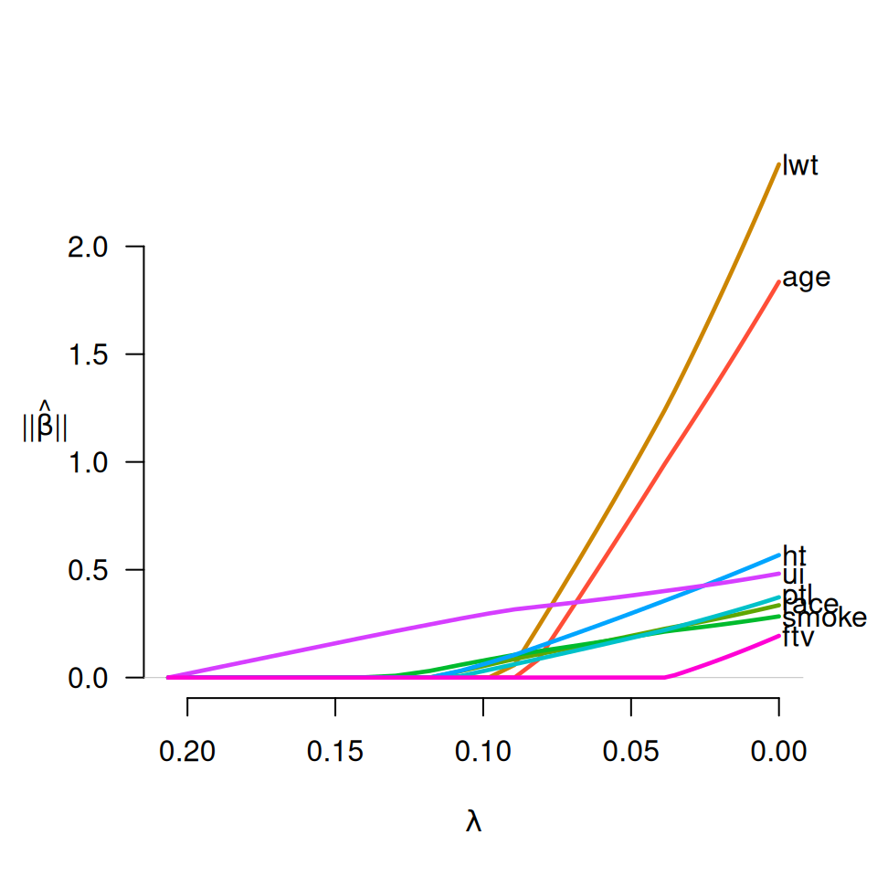
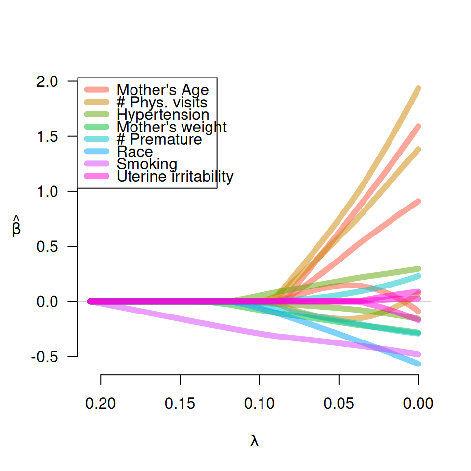

Produces a plot of the coefficient paths for a fitted grpreg object.
Usage
# S3 method for class 'grpreg'
plot(x, alpha = 1, legend.loc, label = FALSE, log.l = FALSE, norm = FALSE, ...)Arguments
- x
Fitted
"grpreg"model.- alpha
Controls alpha-blending. Default is alpha=1.
- legend.loc
Where should the legend go? If left unspecified, no legend is drawn. See
legendfor details.- label
If TRUE, annotates the plot with text labels in the right margin describing which variable/group the corresponding line belongs to.
- log.l
Should horizontal axis be on the log scale? Default is FALSE.
- norm
If
TRUE, plot the norm of each group, rather than the individual coefficients.- ...
Other graphical parameters to
plot,matlines, orlegend
Examples
# Fit model to birthweight data
data(Birthwt)
X <- Birthwt$X
y <- Birthwt$bwt
group <- Birthwt$group
fit <- grpreg(X, y, group, penalty="grLasso")
# Plot (basic)
plot(fit)
# Plot group norms, with labels in right margin
plot(fit, norm=TRUE, label=TRUE)

# Plot (miscellaneous options)
myColors <- c("black", "red", "green", "blue", "yellow", "purple",
"orange", "brown")
plot(fit, legend.loc="topleft", col=myColors)
labs <- c("Mother's Age", "# Phys. visits", "Hypertension", "Mother's weight",
"# Premature", "Race", "Smoking", "Uterine irritability")
plot(fit, legend.loc="topleft", lwd=6, alpha=0.5, legend=labs)

plot(fit, norm=TRUE, legend.loc="topleft", lwd=6, alpha=0.5, legend=labs)